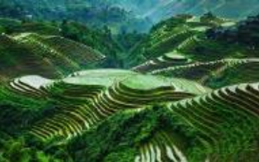
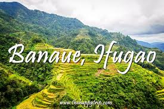
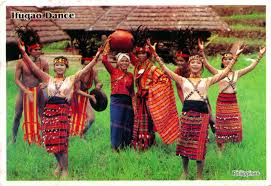

Ifugao

Ifugao (Ilocano: Probinsia ti Ifugao; Tagalog: Lalawigan ng Ifugao) is a landlocked province of the Philippines in the Cordillera Administrative Region in Luzon. Its capital is Lagawe and it borders Benguet to the west, Mountain Province to the north, Isabela to the east, and Nueva Vizcaya to the south.
For the ethnic group, see Ifugao people. For the language, see Ifugao language. For other uses, see Ifugao (disambiguation).

The Rice Terraces of the Philippine Cordilleras and Banaue Rice Terraces are the main tourist attractions in the province. These terraces are believed to have been hand-carved into the mountains 2,000 years ago to plant rice. However, recent research by carbon dating suggests that they were built much later.[4] In 1995, the Rice Terraces of the Philippine Cordilleras were declared as a UNESCO World Heritage Site.[5] In 2008 and 2015, the Hudhud chants of the Ifugao and the Punnuk (Tugging rituals and games) were inscribed in the UNESCO Intangible Cultural Heritage Lists.
Ifugao is named after the term i-pugo ("i" [from/people] and pugo [hill]), which translates to people of the hill.[8] Alternatively, the province's name may have come from the word pugaw, which means "the cosmic earth",[9] ipugaw then referring to "mortals". Finally, the name may have been derived from ipugo, a type of grain in local mythology given to the people by Matungulan, the god of grains.
The Spanish had great difficulty in taking over Ifugao, like most of the Cordilleras due to the fierce belief of the Cordillera people of their rights since ancient times. The Ifugao battled colonizers for hundreds of years, even after the state was colonized and was transformed into a part of Nueva Vizcaya province of the Spanish-administered Philippines.[10][11] In 1891, the Spanish government established Quiangan as a comandancia-politico-militar[12][13] for the Ifugao area.[14] The Spanish occupation in the province ended with the outbreak of the Philippine Revolution.
In the Northern Philippines, the Ifugao people are one of many minority ethnolinguistic groups best documented by ethnohistoric and anthropological scholars. However, there is a dearth of historical information in the region particularly during the Spanish conquest.
Changes in both demographics and cultural orientation among existing communities were to be expected during the time as certain groups resulted to migration towards the highlands. According to studies, the Ifugao succeeded multiple times resisting against the Spanish at conquest.[15] The groups that migrated to the highlands were believed to be those that resisted the Spanish colonial control, which became prevalent in the lowlands. According to Acabado, the rugged nature of the highlands around the Ifugao region did not out rightly provide a hindrance to the Spanish conquest. Other regions that had similar rugged environment as found in Ifugao were subjected to colonial rule. Archeological research shows Ifugao practices of successful resistance by strengthening their political and economic resources. Spanish conquest and population increase was the source of shifting to wet-rice agriculture.
